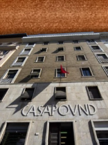

RSI · THE FASCIST FRONT, CIVIL WAR FACTION
Name: Italian Social Republic (RSI) – Repubblica Sociale Italiana, the Fascist Front
Leader: the Direttorio Nazionale (CasaPound – Forza Nuova).
"The Black Barons have dusted off the fasces."
Target ideology: ultranationalism.
Overview: the neo-fascist faction of the civil war. Before the war, Italy's own fascist road is the Second March on Rome branch of the Italian tree, which keeps the ITA tag.
The RSI has no focus tree yet; it can be played only in the civil war.
| Field | Value |
|---|---|
| Country Tag | RSI |
| Capital | Latina during the civil war (the RSI claims Rome) |
| Territory | 1 state: Latina |
| Army | 14 divisions "Guardia Nazionale Repubblicana" |
| Ruling party | ultranationalism – CP-FN (CasaPound, Forza Nuova), no elections |
| Stability / War Support | 45% / 60% |
| Research slots | 2 |
| At war with | ITA, INT, SRI |
| Starting popularity | % |
|---|---|
| Ultranationalism (CP-FN) | 65 |
| Reactionary (FN) | 10 |
| Conservative (Centro-Destra) | 8 |
| Authoritarianism (Lega) | 6 |
| Autocracy (Esercito Nazionale) | 5 |
| Fundamentalism | 5 |
| Centrist | 1 |
Background: when the Republic falls apart, CasaPound, Forza Nuova and the militias seize Latina and proclaim a new Social Republic at the gates of Rome. Every other faction is an enemy: the communists of the north and of Naples, and the generals in Rome.
Goal: take Rome and the Republic's legitimacy, and survive a three-front war.
The RSI has no national spirits yet, and the Italian fascist branch adds none.
The fascist road is in the Italian tree (italian_focus), under Good old Days:
| Focus | Primary Effect |
|---|---|
| Good old Days | Reactionary government, elections off. Mutually exclusive with Democratic Spectrum and On the Side of the Proletariat. |
| Second March on Rome | +50 political power, +50% war support, −20% stability. Mutually exclusive with Casa Savoia! |
| Fascism is Back! | Big stability loss. |
| Expand State Authority → Restore the Storic Allience | Stability. |
| The DVX is Back → Gran Consiglio del Fascismo | War support; +200 political power. |
| National Revival → Propaganda Manifest | War support; +50 political power, stability, +20 army experience. |
| The Empire Returns to Rome | Final focus: stability and war support. |
The other half of Good old Days, Casa Savoia!, restores the monarchy: see the Italian Republic page.
| Photo | Leader | Party | Ideology | Icon |
|---|---|---|---|---|
| — | Direttorio Nazionale | CP-FN – CasaPound, Forza Nuova | ultranationalism – fascistUltranationalism | |
| — | Comando della Milizia | CP-FN – CasaPound, Forza Nuova | ultranationalism – national_syndicalismUltranationalism | |
 | Grand Governing Leadership (Italy) | CP-FN – CasaPound, Forza Nuova | ultranationalism – neo_fascistUltranationalism |
Other RSI parties: conservative Centro-Destra, reactionary FN – Futuro Nazionale, authoritarianism Lega Nord, autocracy Esercito Nazionale (Forze Armate della Repubblica Sociale); all the left-wing and monarchist parties are banned. The Grand Governing Leadership is Italy's ultranationalist leader before the war.
The six-faction civil war (ITA, INT, SRI, RSI, LOM, TYR) is in the mod but, in the current version, it can only be started from the debug decisions: no focus triggers it yet.